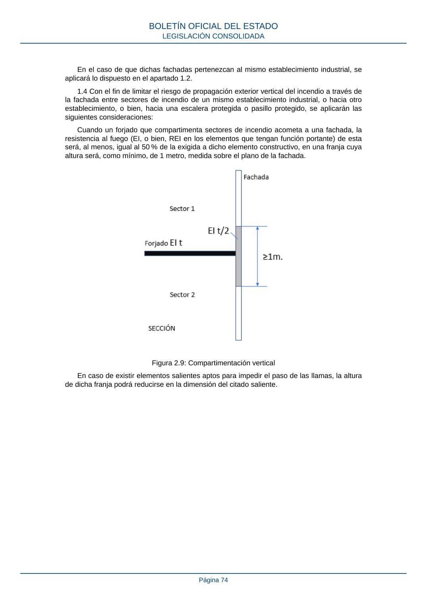

RSCIEI · Página 74 · versión 2025-04-10
SHA256: 85aa0af25d51e5b58d8975a4eefbf76d3f57a8933445cfe814ae9c4818a2e3e7 · página física 74 de 108 · métodos de encabezado
solo si están cotejados.
Formatos: Markdown · JSON de bloques · PDF p. 74 · imagen PNG
En el caso de que dichas fachadas pertenezcan al mismo establecimiento industrial, se aplicará lo dispuesto en el apartado 1.2. 1.4 Con el fin de limitar el riesgo de propagación exterior vertical del incendio a través de la fachada entre sectores de incendio de un mismo establecimiento industrial, o hacia otro establecimiento, o bien, hacia una escalera protegida o pasillo protegido, se aplicarán las siguientes consideraciones: Cuando un forjado que compartimenta sectores de incendio acometa a una fachada, la resistencia al fuego (EI, o bien, REI en los elementos que tengan función portante) de esta será, al menos, igual al 50 % de la exigida a dicho elemento constructivo, en una franja cuya altura será, como mínimo, de 1 metro, medida sobre el plano de la fachada. Figura 2.9: Compartimentación vertical En caso de existir elementos salientes aptos para impedir el paso de las llamas, la altura de dicha franja podrá reducirse en la dimensión del citado saliente. BOLETÍN OFICIAL DEL ESTADO LEGISLACIÓN CONSOLIDADA Página 74
